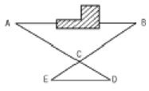

지적산업기사 (2005-05-29 기출문제)
1과목: 지적측량
1. 축척 1/6000 임야도 지역에서 지적측량의 면적측정 방법으로 적합한 것은?
- 전자면적측정기에 의한 방법
- 지상삼사법
- 도상삼변법
- 푸라니미터법
(정답률: 알수없음)

2. 경위의측량방법에 의한 세부측량시 축척변경 시행지역의 측량결과도 축척은?
- 1/300
- 1/500
- 1/600
- 1/1200
(정답률: 알수없음)
3. 지적도근점을 구성할 때 적합하지 않은 도선은?
- 결합도선
- 폐합도선
- 개방도선
- 왕복도선
(정답률: 알수없음)
4. 측판측량을 도선법으로 16변을 측정하였을 때, 그 오차를 각점에 배분하여 사용할 수 있는 폐색오차의 한계는?
- 도상 2.3㎜
- 도상 1.9㎜
- 도상 1.3㎜
- 도상 0.9㎜
(정답률: 알수없음)
5. 경위의측량방법에 의한 세부측량을 할 경우에 준수하여야 할 사항으로 틀린 것은?
- 도선법 또는 방사법에 의한다.
- 관측은 20초독 이상의 경위의를 사용한다.
- 수평각관측은 2대회의 방향각관측법에 의한다.
- 연직각의 관측은 정·반으로 1회 관측하여 그 교차가 5분 이내인 때에는 그 평균치로 한다.
(정답률: 알수없음)
6. 지적측량의 절차를 순서대로 바르게 나열한 것은?
- 계획수립- 준비 및 답사- 선점 및 조표- 관측 및 계산- 성과표작성
- 준비 및 답사- 계획수립- 선점 및 조표- 성과표작성- 관측 및 계산
- 준비 및 답사- 계획수립- 선점 및 조표- 관측 및 계산- 성과표작성
- 계획수립- 준비 및 답사- 성과표작성- 관측 및 계산- 선점 및 조표
(정답률: 알수없음)
7. 지적삼각보조점의 관측을 교회법으로 시행할 경우에 해당되지 않는 것은?
- 관측은 20초독이상의 정밀 경위의를 사용한다.
- 수평각 관측은 3대회(윤곽도 0°, 60°,120°)에 의한다.
- 수평각의 1측회 폐색공차는 ±40초 이내로 한다.
- 수평각의 측각공차에서 기지각과의 차는 ±50초 이내로 한다.
(정답률: 알수없음)
8. 축척이 1/500 지역에서 1등도선으로 지적도근측량을 실시할 경우 연결오차에 대한 허용범위는? (단, 도선의 수평거리의 총합계는 800m이다.)
- 24cm 이하
- 14cm 이하
- 22cm 이하
- 12cm 이하
(정답률: 50%)
9. 지적도근점의 관측 및 계산에 대한 설명으로 틀린 것은?
- 20초독 이상의 경위의를 사용한다.
- 배각법으로 관측할 경우 3배각을 관측한다.
- 진수는 5자리 이상 계산한다.
- 연직각 관측시 교차의 한계는 60초이다.
(정답률: 알수없음)
10. 지적법의 규정에 의한 지적측량의 구분으로 옳은 것은?
- 기준측량과 확정측량
- 일반측량과 세부측량
- 기초측량과 세부측량
- 일반측량과 공공측량
(정답률: 90%)
11. 일람도에 등재하여야 할 사항이 아닌 것은?
- 지번
- 제명
- 축척
- 도곽선 수치
(정답률: 알수없음)
12. A점에 평판을 세우고 B점에 세운 3m 높이의 표척의 끝을 앨리데이드(alidade)로 시준하여 3.0분획을 읽었다. A, B간의 수평거리 D는? (단, 평판의 기계고는 1.5m이고 A, B점간은 평지이다.)
- D = 15m
- D = 20m
- D = 30m
- D = 50m
(정답률: 알수없음)
13. 등록전환시 임야대장상 말소면적과 토지대장상 등록면적과의 허용오차 산출식은? (단, M은 축척분모, F는 원면적)
- A=0.0262M·㎼F
- A=0.026M·F
- A=0.0262M·F
- A=0.026M·㎼F
(정답률: 알수없음)
14. 종선차가 +, 횡선차가 - 일 때의 방위각은 몇 상한에 위치하는가?
- 1상한
- 2상한
- 3상한
- 4상한
(정답률: 알수없음)
15. 일람도의 제도방법에 대한 설명으로 옳은 것은?
- 일람도의 축척은 별도의 제한이 없다.
- 도면의 장수가 적어도 일람도를 반드시 작성해야 한다.
- 도면의 번호는 3mm 크기로 제도한다.
- 하천은 0.1mm 검은색으로 제도한다.
(정답률: 알수없음)
16. 측판측량방법에 의한 세부측량으로 사용할 수 없는 것은?
- 교회법
- 도선법
- 방사법
- 시거법
(정답률: 75%)
17. 지적 도면에 등록하는 도곽선 제도에 대한 설명으로 틀린것은?
- 도곽선의 폭은 0.1mm로 한다.
- 도곽선 수치의 크기는 2mm로 제도한다.
- 도곽의 크기는 가로 30cm, 세로 40cm로 한다.
- 도곽선수치의 제도는 도곽선 왼쪽 아래와 오른쪽 윗부분에 한다.
(정답률: 알수없음)
18. 다음 GPS에 대한 설명으로 틀린 것은?
- 3차원 위치, 고도, 시간정보를 제공
- 하루 24시간 연속적으로 서비스 제공
- 눈 또는 비가 내리는 기상조건에서는 사용이 불가능
- WGS84 좌표계를 사용
(정답률: 알수없음)
19. 축척 1/600인 지역에 등록된 필지의 면적이 50.55m2 로 산출 되었을 때 지적공부에 등록하는 면적은?
- 50 m2
- 50.5 m2
- 50.6 m2
- 51 m2
(정답률: 64%)
20. 광파기 측량방법에 의하여 다각망 도선법으로 지적삼각 보조측량을 시행하는 경우 1도선의 최대 거리는?
- 2km
- 3km
- 4km
- 5km
(정답률: 알수없음)
2과목: 응용측량
21. 양쪽 갱구의 A,B점의 수평위치 및 표고가 각각 A(4370.60, 2365.70, 465.80), B(4625.30, 3074.20, 432.50)일 때 AB간의 경사거리는? (단, 단위는 m임.)
- 254.7m
- 708.5m
- 753.6m
- 823.5m
(정답률: 알수없음)
22. 터널의 중심선을 측설하는 측량과 관계가 없는 것은?
- 심천측량
- 지하측량
- 연결측량
- 지상측량
(정답률: 62%)
23. 수준측량에 사용되는 수평면의 정의로 옳은 것은?
- 지반의 높이를 비교할 때 기준이 되는 면
- 연직선에 직교하는 모든 점을 잇는 곡면
- 연직선에 직교하는 평면
- 필요에 따라 특별히 선정된 기준면
(정답률: 알수없음)
24. 항공사진의 축척에 대한 설명으로서 옳은 것은?
- 초점거리에 비례하고 촬영고도에 반비례한다.
- 초점거리에 반비례하고 촬영고도에 비례한다.
- 초점거리와 촬영고도에 정비례한다.
- 초점거리에는 무관하고 촬영고도에는 반비례한다.
(정답률: 알수없음)
25. 대지표정이 끝났을 때 사진과 실제 지형과의 관계는?
- 대응
- 상사
- 역대칭
- 합동
(정답률: 알수없음)
26. 우리나라의 1/25,000 지형도에서 계곡선의 간격은?
- 10m
- 20m
- 50m
- 100m
(정답률: 67%)
27. 촬영고도 8,000m, 사진Ⅰ의 주점기선의 길이는 80mm, 사진Ⅱ의 주점기선의 길이는 81mm일 때 시차차 1.0mm의 그림자의 고저차는 얼마인가?
- 74.53m
- 85.35m
- 99.38m
- 112.46m
(정답률: 알수없음)
28. GPS 관측시 주의할 사항으로 거리가 먼 것은?
- 측정점 주위에 수신을 방해하는 장애물이 없도록 하여야 한다.
- 충분한 시간동안 수신이 이루어져야 한다.
- 안테나 높이, 수신시간과 마침시간 등을 기록한다.
- 온도의 영향을 많이 받으므로 너무 춥거나 더우면 관측을 중단한다.
(정답률: 알수없음)
29. 수준측량의 왕복거리 2km에 대하여 제한 오차가 3mm라면 왕복거리 4km에 대한 제한 오차는?
- 5.24㎜
- 4.24㎜
- 7.24㎜
- 6.24㎜
(정답률: 알수없음)
30. 철도, 도로 등의 단곡선 설치에서 가장 일반적으로 사용하는 방법은?
- 편각현장법
- 중앙종거법
- 접선편거법
- 접선지거법
(정답률: 알수없음)
31. 교점(I.P.)가 기점에서 1658.450m 떨어져 있고 곡선반경 (R)이 480m, 교각(I)가 20° 25′40″일 때 곡선길이는?
- 163.439m
- 165.998m
- 168.560m
- 171.135m
(정답률: 알수없음)
32. 아래 그림에서 DE=10m, CD=12m, AC=80m 로 측정되었을 때 건물을 통과하는 AB의 길이는 ? (단, AB // ED이고 C는 AD , BE 의 교점)

- 66.67m
- 96.00m
- 80.00m
- 77.37m
(정답률: 알수없음)
33. 항공사진 측량 도화기의 정밀도를 나타내는 계수는?
- C-계수
- K-상수
- 경중률 계수
- 과잉수정 계수
(정답률: 알수없음)
34. 등고선의 종류에 대한 설명으로 틀린 것은?
- 주곡선은 지형을 표시하는데 기본이 되는 선이다.
- 계곡선은 주곡선 10개마다 굵게 표시한다.
- 간곡선은 주곡선 간격의 1/2이다.
- 조곡선은 간곡선 간격의 1/2이다.
(정답률: 70%)
35. 도로의 직선부와 곡선부가 만나는 부분의 곡률을 서서히 증가시켜 넣는 곡선은?
- 복심곡선
- 반향곡선
- 머리핀곡선
- 완화곡선
(정답률: 알수없음)
36. 다음 중 정표고(正標高)와 관련된 설명 중 틀린 것은?
- 지구의 중력 크기는 극지방이 크고 적도지방이 작다.
- 평균해수면에 의한 지오이드로부터 연직거리를 정표고라 한다.
- 정표고는 기하학적인 높이를 나타내므로 동일 수준면 상의 값이 반드시 같다.
- 정표고는 수준측량에서 구한 높이에서 보정을 해야 되며 이 보정을 오소매트릭 보정이라 한다.
(정답률: 알수없음)
37. 지형도의 해안선은 어느 면을 기준으로 표현하는가?
- 약 최저 저조면
- 평균 고조면
- 약 최고 고조면
- 평균 해수면
(정답률: 알수없음)
38. 일반사진기와 비교할 때, 항공사진측량용 사진기에 대한 설명으로 옳지 않은 것은?
- 일반사진기와 비교하여 피사각이 크다.
- 렌즈 왜곡이 적으며 왜곡이 있어도 보정이 가능하다.
- 초광각 사진기의 피사각은 60°, 광각 사진기의 피사각은 90°, 보통각 사진기의 피사각은 120°이다.
- 해상력과 선명도가 좋다.
(정답률: 알수없음)
39. 초점거리 150㎜인 카메라로 촬영한 축척 1/5000인 수직 사진에서 화면크기가 23 x 23㎝이고, 종중복도가 60%일 때 기선고도비는?
- 0.26
- 0.51
- 0.61
- 0.96
(정답률: 알수없음)
40. 교각(Ⅰ)이 60°, 곡률반경이 500ｍ인 경우 곡선 설치에 필요한 중앙 종거(M)는 약 얼마인가?
- 47ｍ
- 57ｍ
- 67ｍ
- 77ｍ
(정답률: 알수없음)
3과목: 토지정보체계론
41. 우리나라 지방자치법 상 시로 승격하기 위한 인구수는?
- 2만명
- 3만명
- 5만명
- 10만명
(정답률: 알수없음)
42. 과거 10년간 등차급수적으로 인구증가를 한 도시가 있다. 현재인구가 140만, 10년전 인구가 100만 이라면, 이 도시의 평균 인구 증가율은?
- 2%
- 3%
- 4%
- 5%
(정답률: 알수없음)
43. 시가지의 노후화된 기존환경을 완전히 제거하고 새로운 환경으로 건설하는 대표적인 도시재개발의 형태는?
- 철거재개발
- 수복재개발
- 보전재개발
- 개량재개발
(정답률: 알수없음)
44. 다음중 신도시 개발의 주목적이 아닌 것은?
- 주택문제의 해결
- 도시확산의 방지
- 농촌지역의 도시화 촉진
- 인구문제의 완화
(정답률: 알수없음)
45. 도시 관련 계획수립시 가장먼저 할 일은 인구목표의 설정이다. 다음중 일반적인 총인구목표설정방법이 아닌 것은?
- 과거추세연장법
- 창조적 방법
- 비교대상도시로부터 유추하여 추정하는 방법
- 토지이용계획에 의거한 방법
(정답률: 40%)
46. 다음 중 대도시론자는?
- E. Howard
- G. Feder
- R. Taylor
- L. Corbusier
(정답률: 알수없음)
47. 캐빈린치(Kevin Lynch)의 도시 이미지 구성요소에 해당되지 않는 것은?
- 도로(path)
- 랜드마크(landmark)
- 접합점(node)
- 슬럼(slum)
(정답률: 알수없음)
48. 도시인구가 120,000명, 가구당 평균 가구원수 4명, 1호당 부지면적 100m2, 공공용지율 40%이다. 이 도시의 주거지역 택지소요 면적은?
- 300㏊
- 400㏊
- 500㏊
- 600㏊
(정답률: 알수없음)
49. 국토의계획및이용에관한법률상 상위계획에서 하위계획으로 바르게 나열된 것은?
- 지구단위계획＞도시기본계획＞도시관리계획＞광역도시계획
- 광역도시계획＞도시관리계획＞도시기본계획＞지구단위계획
- 지구단위계획＞광역도시계획＞도시기본계획＞도시관리계획
- 광역도시계획＞도시기본계획＞도시관리계획＞지구단위계획
(정답률: 알수없음)
50. 도시의 무질서한 확산을 방지하고 도시주변의 자연환경을 보전하여 도시민의 건전한 생활환경을 확보하기 위하여 지정한 구역은?
- 시가화조정구역
- 광역계획구역
- 상세계획구역
- 개발제한구역
(정답률: 알수없음)
51. 국토의계획및이용에관한법률상 주거기능을 위주로 이를 지원하는 일부 업무·상업 기능을 보완하기 위하여 지정한 지역은?
- 일반상업지역
- 근린상업지역
- 일반주거지역
- 준주거지역
(정답률: 알수없음)
52. 근린공원의 유치거리로 가장 적당한 것은?
- 2 ∼ 2.5km
- 2.5 ∼ 3.0km
- 1.6 ∼ 2.0km
- 0.5 ∼ 1km
(정답률: 알수없음)
53. 교통조사에 있어 통상 OD조사라 불리우는 것은?
- 교통량 조사
- 주차상황 조사
- 기종점 조사
- 혼잡도 조사
(정답률: 알수없음)
54. 도시경제지표를 추계하기 위해 사용되는 변이할당기법(Shift-Share Analysis)의 특징이 아닌 것은?
- 지역경제의 성장예측에 이용되는 기법으로 도시주요산업별 성장잠재력 파악에 유용함
- 2개 시점이상의 시계열분석을 통하여 도시경제의 흐름과 미래전망을 손쉽게 파악할 수 있음
- 자료조사 및 분석에 타기법에 비해 상대적으로 많은 시간과 비용 및 인력이 필요함
- 도시경제의 횡적 및 종적인 상관관계를 일목요연하게 파악하기 쉬움
(정답률: 알수없음)
55. 도시계획시설인 도로의 기능에 따른 분류중에서 가구를 획정하고 택지와의 접근을 목적으로 하는 도로는?
- 보조간선도로
- 집산도로
- 국지도로
- 특수도로
(정답률: 알수없음)
56. 국토 및 지역계획에서 도시와 농촌을 다루는 바람직한 입장 이라고 볼수 없는 것은?
- 대도시의 과도한 밀집은 지양되어야 한다.
- 도시와 농촌간의 격차는 최소화 되어야 한다.
- 농촌의 생활편익 시설은 확대 되어야 한다.
- 도시와 농촌은 모든면에서 대등해야 한다.
(정답률: 알수없음)
57. 도시계획을 위한 기초조사의 일반지침으로 잘못된 것은?
- 가시적, 양적 고찰에서 비가시적, 질적 고찰로 이행
- 단기계획일수록 자연환경 시설적 측면을 중점 조사
- 장기적 계획일수록 도시의 사회경제적 측면을 중점 조사
- 예비조사단계에서는 특정부분의 발전방향을, 본 조사에서는 문제중심의 조사
(정답률: 알수없음)
58. 환지 면적 계산방식 중 종전 택지의 면적 및 위치를 기준으로 환지를 결정하는 방식은?
- 평가식
- 면적식
- 지가표준식
- 절충식
(정답률: 30%)
59. 다음중 도시내부 구조를 설명하는데 있어서 동심원(同心圓)이론을 주장한 사람은?
- E.Ullman
- H.Hoyt
- C.Harris
- E.Burgess
(정답률: 알수없음)
60. 건폐율 70%로 규제되어 있는 지역에서 연면적 2,000m2의 4층 건물을 짓고자 한다. 최소한도로 필요한 대지면적은 약 얼마인가?
- 700m2
- 715m2
- 730m2
- 750m2
(정답률: 알수없음)
4과목: 지적학
61. 토지조사사업추진 당시의 일필지조사 업무가 아닌 것은?
- 지주조사
- 강계조사
- 지목조사
- 관습조사
(정답률: 알수없음)
62. 다음 중 필지의 개별적 구분을 해주는 토지표시 사항은?
- 지번
- 지목
- 면적
- 소유자
(정답률: 알수없음)
63. 다음 중 토지조사령에 의한 세부 측도에서 가장 많이 쓰인 지적측량기준점은?
- 대삼각점
- 소삼각점
- 지적보조삼각점
- 지적도근점
(정답률: 알수없음)
64. 토지의 등록전환으로 인하여 임야대장에 결번이 생겼을 때의 일반적인 처리방법은?
- 지번설정지역을 변경한다.
- 결번에 해당하는 토지대장을 빼내어 폐기한다.
- 결번에 해당하는 지번을 다른 토지에 붙인다.
- 결번을 그대로 둔다.
(정답률: 알수없음)
65. 초기에 부여된 지목명칭의 변경을 잘못 연결한 것은?
- 공원지 → 공원
- 사사지 → 사적지
- 분묘지 → 묘지
- 운동장 → 체육용지
(정답률: 알수없음)
66. 토지등록의 말소에 대한 설명 중 토지의 멸실에 의한 말소에 해당하는 것은?
- 등록전환에 의한 말소
- 토지합병에 의한 말소
- 등록요건변경에 따른 말소
- 해면성 말소
(정답률: 알수없음)
67. 지적재조사의 목적으로 보기 어려운 것은?
- 경계복원 능력의 향상
- 지적 불부합지의 해소
- 지적공부의 양적 향상 도모
- 능률적인 지적관리 체제로 개선
(정답률: 알수없음)
68. 부동산등기법에서 "법률행위로 인한 물권변동은 등기를 하여야 물권변동의 효력이 발생한다."는 것은 지적에서 어느 이념과 유사한 것인가?
- 실질적 심사 주의
- 지적 형식 주의
- 지적 공개 주의
- 직권 등록 주의
(정답률: 알수없음)
69. 다음 중 토지정보시스템을 구축하는데 필요한 토지표시 사항의 특성으로 적합하지 않은 것은?
- 정확성
- 통일성
- 다양성
- 단순성
(정답률: 알수없음)
70. 토지의 고저에 관계없이 수평면상의 투영만을 가상하여 각 필지의 경계를 등록하는 지적제도는?
- 2차원 지적
- 3차원 지적
- 4차원 지적
- 공간 지적
(정답률: 알수없음)
71. 지목을 분류하는데 있어 토지현황에 따른 분류에 해당하는 것은?
- 지형지목
- 단식지목
- 농촌형지목
- 선진국형지목
(정답률: 알수없음)
72. 지압조사(地押調査)를 가장 잘 설명하고 있는 것은?
- 측량검사의 일종이다.
- 소유권의 변동사항에 주안을 둔다.
- 신청이 없는 경우의 직권에 의한 이동지 조사이다.
- 소유자의 동의하에 현지를 확인해야 효력이 있다.
(정답률: 알수없음)
73. 지적의 3요소와 가장 거리가 먼 것은?
- 토지
- 등록
- 공부
- 등기
(정답률: 알수없음)
74. 토지를 지적공부에 등록하는 주체에 대하여 규정하고 있는 이념은?
- 형식주의
- 국정주의
- 신청주의
- 공개주의
(정답률: 알수없음)
75. 동일한 경계가 축척이 다른 도면에 각각 등록되어 있을 경우 경계를 확정하기 위하여 적용되는 원칙은?
- 축척종대의 원칙
- 주지목추종 원칙
- 지번선순위 원칙
- 경계불가분 원칙
(정답률: 알수없음)
76. 오늘날의 지적공부와 같은 조선시대의 토지등록공부는?
- 양안(量案)
- 입안(立案)
- 문기(文記)
- 지권(地卷)
(정답률: 알수없음)
77. 지목의 설정원칙에 해당하지 않는 것은?
- 일필일목의 원칙
- 주지목추종의 원칙
- 용도지목의 원칙
- 법정지목의 원칙
(정답률: 알수없음)
78. 토지조사사업 당시 토지의 사정은 누가 하였는가?
- 소관청
- 임시 토지조사국장
- 행정자치부장관
- 세무서장
(정답률: 알수없음)
79. 경계불가분의 원칙을 설명한 것으로 가장 옳은 것은?
- 경계는 인접지와 공통이다.
- 경계는 작은 말뚝으로 표시한다.
- 경계는 토지 1필지에만 전속한다.
- 경계를 결정할 때에는 측량한다.
(정답률: 알수없음)
80. 임야조사사업에 따른 토지의 사정은 누가 하였는가?
- 조선총독
- 임시토지조사국장
- 도지사
- 면장
(정답률: 알수없음)
5과목: 지적관계
81. 건축법상 대수선(大修繕)의 범위로서 가장 합당하지 않는 것은?
- 기존의 건축물 내력벽의 면적을 30m2이상 해체하여 변경하는 것
- 기존의 건축물 방화벽을 해체하여 수선하는 것
- 기존의 건축물 기둥을 3개 이상 해체하여 변경하는 것
- 기존건축물의 전부를 철거하고 다시 축조하는 것
(정답률: 알수없음)
82. 공유지연명부의 등록사항이 아닌 것은?
- 소유자의 성명 또는 명칭
- 토지의 면적
- 토지의 소재
- 소유권지분
(정답률: 알수없음)
83. 토지대장에 등록된 지번을 새로이 정할 필요가 있을 때에는 소관청은 누구의 승인을 얻어 시행하는가?
- 대통령
- 행정자치부장관
- 시·도지사
- 대한지적공사장
(정답률: 알수없음)
84. 지적법상 지방세 체납처분의 예에 의하여 수수료를 징수할 수 있는 것은?
- 열람등본수수료
- 지적공부 정리수수료
- 직권 조사·측량에 의한 지적측량수수료
- 토지소유자가 의뢰한 지적측량에 대한 수수료
(정답률: 알수없음)
85. 토지의 거래계약 허가구역내에서 계약 당사자가 거래계약 허가신청을 하였으나 불허가 처분을 받았다. 이에 불복하는 경우 이의신청을 할수 있는 기관은?
- 토지수용위원회
- 시장·군수 또는 구청장
- 국토이용계획심의위원회
- 도지사
(정답률: 알수없음)
86. 다음중 과태료 부과 대상인 것은?
- 지적법에 의한 신청을 허위로 한 경우
- 등록증을 빌려 지적편집도를 간행·판매한 경우
- 정당한 사유없이 업무집행 방해 한 경우
- 무자격자가 지적측량 행위를 한 경우
(정답률: 알수없음)
87. 지적기술자의 징계사유가 아닌 것은?
- 지적기술자로서 명예를 훼손하였을 때
- 중대한 과실로 지적측량을 잘못한 때
- 지적관계법령의 규정에 위반한 때
- 견책의 징계를 받고 지적측량 업무에 종사한 때
(정답률: 알수없음)
88. 지적법에 규정된 내용 중에서 공익사업을위한토지등의취득 및보상에관한법률에 의해 토지수용을 할 수 있는 사항으로 맞는 것은?
- 지적측량사가 측량을 위하여 타인의 토지에 출입을 하고자 할 때
- 지적측량사가 측량을 위하여 장애물을 제거하고자 할때
- 축척변경시 청산금을 산출할 때
- 지적측량기준점 표지를 설치하고자 할 때
(정답률: 37%)
89. 축척변경승인신청서에 첨부할 필요가 없는 서류는?
- 시행 지역의 지가 조사서
- 축척 변경을 해야 할 사유
- 지번별조서
- 토지소유자의 동의서
(정답률: 알수없음)
90. 다음 중 지적법상의 토지의 이동이라고 할 수 없는 것은?
- 토지대장에 등록된 소유자가 달라지는 것
- 지적도에 등록된 경계가 달라지는 것
- 토지대장에 등록된 지번이 달라지는 것
- 경계점좌표등록부에 등록된 좌표가 달라지는 것
(정답률: 알수없음)
91. 물권을 취득하기 위해서 등기가 필요한 것은?
- 점유로 인한 부동산소유권의 취득
- 상속
- 공용징수
- 경매
(정답률: 알수없음)
92. 지적법상 현행 지적도의 축척으로 사용치 않는 것은?
- 1/500
- 1/1000
- 1/2500
- 1/3000
(정답률: 알수없음)
93. 도시관리계획 결정의 효력발생 시기는?
- 도시관리계획결정 고시일
- 도시관리계획결정 고시일 그 다음날
- 도시관리계획결정 고시일로부터 5일후
- 도시관리계획결정 고시일로부터 7일후
(정답률: 알수없음)
94. 환지예정지 지정이 있는 경우 종전토지의 소유자에 관한 다음 기술중 타당한 것은?
- 소유권과 그에 속한 모든 권리를 그대로 가진다.
- 소유권과 그에 속한 수익권은 가지나 사용권은 상실한다.
- 사용, 수익권은 가지고 있으나 소유권은 상실한다.
- 소유권은 행사할수 있으나 사용, 수익권은 상실한다.
(정답률: 알수없음)
95. 지적법상 지목변경신청을 해야 할 토지가 아닌 것은?
- 토지의 형질변경 등의 공사가 준공된 토지
- 건축물의 용도가 변경된 토지
- 매매로 인해 토지소유권이 변경된 토지
- 토지의 용도가 변경된 토지
(정답률: 알수없음)
96. 다음에서 결번요인이 아닌 것은?
- 지번부여지역의 분합으로 인한 결번
- 등록전환으로 인한 결번
- 토지분할에 의한 결번
- 토지의 말소에 의한 결번
(정답률: 알수없음)
97. 국토의계획및이용에관한법률에 의한 용도지역 중 관리지역에 해당되는 것은?
- 보전관리지역
- 상업관리지역
- 공업관리지역
- 녹지관리지역
(정답률: 40%)
98. 다음 중 도시관리계획에 의한 도시지역의 용도지역에 속하지 않는 것은?
- 도시지역
- 상업지역
- 공업지역
- 관광휴양지역
(정답률: 알수없음)
99. 등기신청서에 반드시 기재하여야 할 사항이 아닌 것은?
- 부동산의 소재와 지번
- 토지의 지목과 면적
- 필지별 경계점좌표등록부의 장번호
- 신청인의 성명 또는 명칭
(정답률: 알수없음)
100. 민법상 소멸시효의 중단사유가 아닌 것은?
- 변제
- 청구
- 승인
- 압류
(정답률: 알수없음)